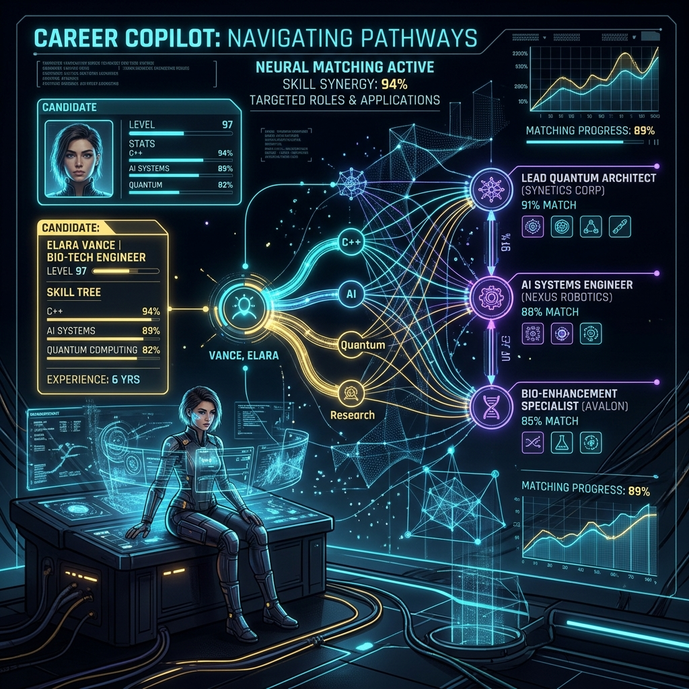

Job-Hunt Copilot is a local-first career strategy and application workspace that helps candidates tailor resumes, evaluate job fit honestly, and prepare for interviews without generic AI fluff or fabricated credentials. It parses a candidate's resume alongside a target job posting, maps exact skill overlaps and missing requirements, proposes truthful high-impact bullet rewrites grounded strictly in the user's real history, and organizes every application in a local pipeline board.
Most AI resume tools hurt candidates by stuffing buzzwords or hallucinating experience that collapses under interview questioning. Job-Hunt Copilot treats career positioning as an evidence-alignment problem: surfacing genuine intersections between a candidate's past work and a role's requirements, and turning gaps into transparent interview preparation.